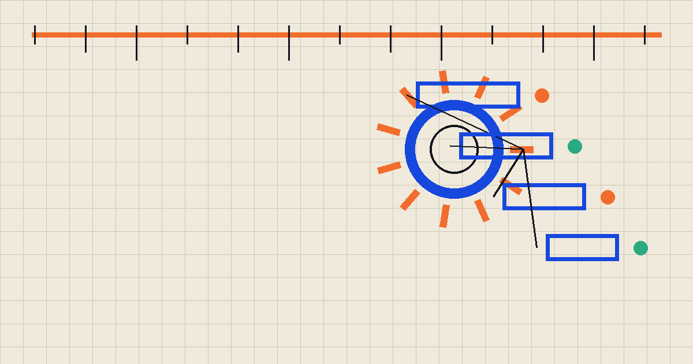

[[ARTICLE_09_H2_01]]
[[ARTICLE_09_BODY_01]]
[[ARTICLE_09_ROOT]]YES NO
[[ARTICLE_09_BRANCH_01_TITLE]]
[[ARTICLE_09_BRANCH_01_BODY]]
[[ARTICLE_09_BRANCH_02_TITLE]]
[[ARTICLE_09_BRANCH_02_BODY]]
CAGE C

[[ARTICLE_09_BODY_01]]
[[ARTICLE_09_BRANCH_01_BODY]]
[[ARTICLE_09_BRANCH_02_BODY]]